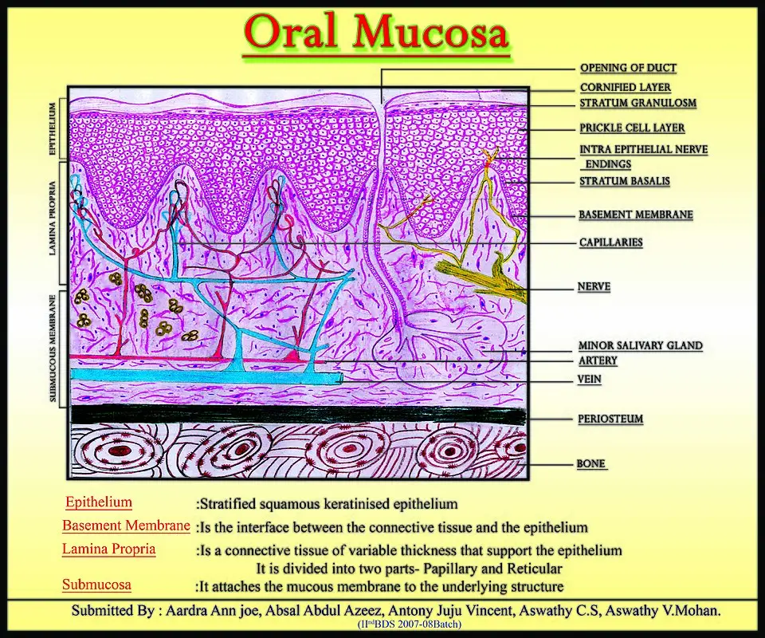
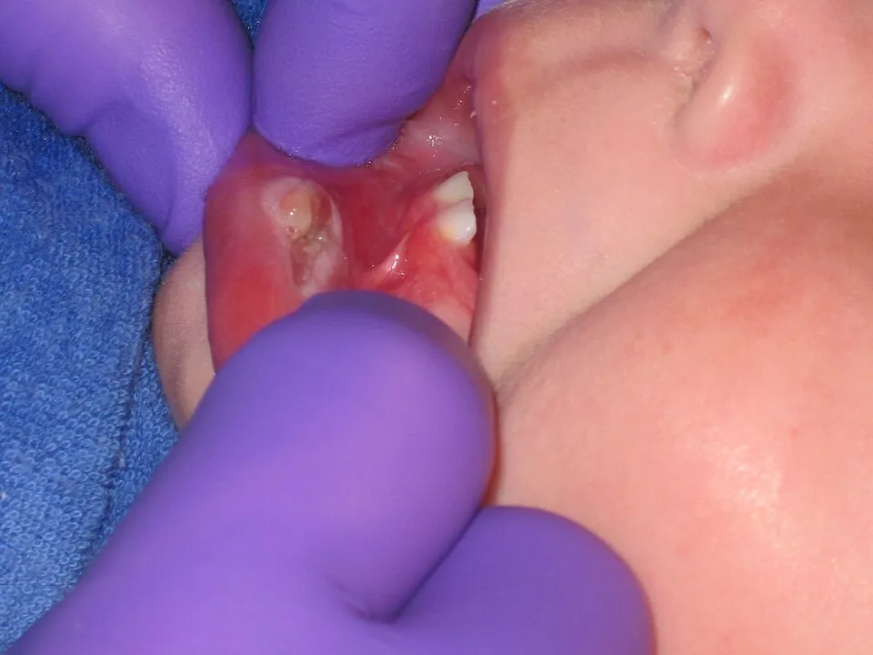

DX.5 — Ulcération buccale traumatique
L'ulcération traumatique guérit dès que sa cause disparaît ; le danger tient donc à la lésion qui lui ressemble et qui ne guérit pasS1S5. Une dent tranchante en regard d'un ulcère ne prouve rien tant que la cicatrisation n'a pas été constatée après sa correctionS1S13.
1. Définition
Le service de chirurgie orale et maxillo-faciale du Centre hospitalier universitaire vaudois (CHUV) indique en 2026 que le traumatisme figure parmi les causes d'ulcère buccal à distinguer de l'aphteS1. L'ulcération buccale traumatique y est une perte de substance de la muqueuse provoquée par une agression locale : morsure, obturation mal polie, dent tranchante, prothèse amovible ou brûlureS1. Les Hôpitaux universitaires de Genève (HUG) distinguent de même le traumatisme mécanique, par morsure, soin dentaire ou prothèse, et le traumatisme thermiqueS7.
Les agressions qui ulcèrent la muqueuse
| Agression | Exemple | Siège habituel |
|---|---|---|
| Morsure | Morsure accidentelle ou répétée de la joue, de la lèvre ou de la langue | Joue, bord de langue, lèvre |
| Dent ou obturation | Dent cassée, arête tranchante, obturation mal polie | Muqueuse qui fait face à la dent |
| Prothèse | Prothèse amovible mal adaptée, crochet, bord en surextension | Crête alvéolaire, vestibule, palais |
| Soin dentaire | Blessure par un instrument au cabinet | Zone du soin |
| Brûlure | Aliment ou boisson brûlants | Palais, langue |
Les diapositives du CHUV et des HUG énumèrent ces causes ; la colonne des sièges découle de la position de chaque agentS1S7.
2. Épidémiologie (Suisse, puis Europe)
Aucune enquête suisse en population ne chiffre l'ulcère traumatique ; une série lucernoise de lésions muqueuses adressées montre toutefois que 9 % d'entre elles étaient malignesS2. En Europe, l'ulcère traumatique compte parmi les lésions muqueuses les plus fréquentes de l'adulteS3. Le tableau des fréquences, le terrain et l'évolution naturelle montrent pourquoi le contrôle de cicatrisation reste la règle.
Fréquence des lésions traumatiques : Suisse, puis Europe
Le tableau rassemble les chiffres lus ; les deux enquêtes européennes mesurent la prévalence à l'examen, alors que la série suisse décrit des patients adressés à un service hospitalierS2S3S4.
| Donnée | Valeur | Population, mesure et année | Source |
|---|---|---|---|
| Lésions malignes parmi les lésions muqueuses adressées | 9 sur 100, dont 7 carcinomes épidermoïdes | 100 patients consécutifs adressés à Lucerne, âge moyen 50,5 ans, publication 2002 | S2 |
| Hyperplasies réactives, dont 19 fibromes d'irritation | 30 sur 100 | Même série suisse | S2 |
| Ulcère traumatique | 7,1 % | 308 adultes de plus de 30 ans examinés à Oviedo, publication 2002 | S3 |
| Lésion frictionnelle | 7,5 % | Même cohorte espagnole | S3 |
| Morsure de joue | 2,9 % à Oviedo ; 2,7 % à Ljubljana | Cohortes espagnole et slovène de 555 adultes de 25 à 75 ans | S3S4 |
| Hyperplasie due à la prothèse | 5,2 % | Cohorte espagnole | S3 |
| Au moins une lésion muqueuse | 51,1 % à Oviedo ; 61,6 % à Ljubljana | Cohortes espagnole et slovène | S3S4 |
L'enquête de Ljubljana n'a observé aucun cancer buccal chez 555 adultes, alors que la série suisse en compte 9 sur 100S4S2. Le recrutement explique l'écart, car on adresse surtout les lésions suspectesS2S4.
Qui fait des ulcères traumatiques ?
Le sujet âgé présente davantage de lésions muqueuses, car son épithélium atrophique devient plus perméable et plus sensible aux agressions mécaniquesS2. L'hyposialie due aux maladies chroniques et aux médicaments s'y ajoute et fragilise encore la muqueuseS2. Les lésions liées aux prothèses deviennent plus fréquentes avec l'âge dans la population de LjubljanaS4. Dans la cohorte d'Oviedo, les grands fumeurs ou grands buveurs avaient un risque quatre fois plus élevé de lésion frictionnelleS3.
Évolution naturelle de l'ulcère traumatique
L'ulcère persiste tant que l'agression se répète, puis il cicatrise lorsque la cause est suppriméeS1. L'information professionnelle suisse (AIPS) de la pâte de triamcinolone rappelle que les lésions d'origine traumatique guérissent sous ce traitementS8.
3. Physiopathologie
La base histologique décrit les couches que la plaie entame, de l'épithélium au chorion vascularisé et innervéS12. La chaîne lésionnelle explique pourquoi l'ulcère persiste tant que l'agression se répèteS1. Le tableau de corrélation montre, pour chaque perturbation, l'exploration qui la révèle et le geste qui la corrigeS1.
Base à connaître : les couches de la muqueuse buccale
La muqueuse buccale superpose un épithélium pavimenteux stratifié, une membrane basale, un chorion conjonctif et une sous-muqueuse qui l'attache aux plans profondsS12. Le chorion porte les capillaires, les nerfs et, plus profondément, les glandes salivaires accessoiresS12. La muqueuse est kératinisée sur le palais dur et la gencive attachée, mais elle reste mobile et non kératinisée sur les joues et les lèvresS6.
Les couches de la muqueuse buccale. Ce schéma histologique publié en couleur montre une coupe de muqueuse masticatoire posée sur l’os.

Lisez d'abord seul ce cliché (les couches de la muqueuse buccale) : cherchez vous-même le signe.
La copie annotée (les couches de la muqueuse buccale) numérote les repères qui sont décrits ci-dessous.
- 1. L’épithélium pavimenteux stratifié forme le revêtement de surface ; ses crêtes s’enfoncent dans le chorion sous-jacent.S12
- 2. La membrane basale sépare l’épithélium du chorion, comme l’indique la légende du schéma.S12
- 3. Les capillaires du chorion montent dans les papilles, juste sous l’épithélium.S12
- 4. Des terminaisons nerveuses atteignent l’épithélium, comme le montre le tracé jaune du schéma.S12
Ce que l'image décide. La structure en couches ne dit pas la cause d’un ulcère : seule la guérison après suppression de l’agression la prouve. S12

Le sujet âgé possède un épithélium atrophique, plus perméable aux substances nocives et plus sensible aux agressions mécaniques, ce qui explique sa vulnérabilité aux prothèsesS2.
De l'agression à la cicatrice, en quatre temps
- Amorce. Une agression mécanique ou thermique détruit le revêtement de la muqueuse : morsure, arête dentaire, prothèse ou brûlureS1S7.
- Développement. La répétition du frottement entretient la plaie, si bien que la lésion siège en regard exact de l'agent causalS1S13.
- Installation. Un terrain atrophique, une hyposialie ou des toxiques ralentissent la réparation et favorisent les lésions frictionnellesS2S3.
- Maintien ou guérison. L'ulcère se maintient tant que la cause persiste, puis il cicatrise après sa suppressionS1S13.
Une plaie profonde peut exiger une suture, ce qui montre que la profondeur de la perte de substance compte autant que sa causeS1.
Corrélation : perturbation, exploration, correction
| Perturbation | Exploration | Correction (mécanisme) |
|---|---|---|
| Frottement d'une dent ou d'une obturation | Examen dentaire en regard de la lésion | Polissage ou soin par le dentiste, qui supprime l'agent |
| Pression d'une prothèse | Examen prothèse retirée, puis remise en place | Retouche de la prothèse ; gel analgésique indiqué pour les blessures prothétiques |
| Plaie profonde | Inspection de la profondeur et du saignement | Suture |
| Inflammation douloureuse de la plaie | Échelle de douleur | Antalgique ou anti-inflammatoire local |
| Absence de cicatrisation après correction | Biopsie au site qui ne cicatrise pas | Traitement de la lésion révélée |
Le tableau résume les gestes du CHUV et les indications des AIPS suisses des produits buccauxS1S9S8.
4. Démarche diagnostique
La démarche écarte d'abord le carcinome, car un ulcère inexpliqué depuis plus de trois semaines relève d'une filière de suspicion de cancerS5. Elle confronte ensuite les diagnostics voisins, dont plusieurs imitent la plaie traumatiqueS1. Le raisonnement pas à pas illustre l'erreur fréquente du débutant et comment l'éviter.
Diagnostics à confronter, les graves d'abord
| Diagnostic | Élément qui tranche | Piège | Conduite si positif |
|---|---|---|---|
| 🚩 Carcinome épidermoïde | Absence de cicatrisation, bords irréguliers, couleur hétérogène, saignement au contact, hypoesthésie, adénopathie | Attribuer la lésion à la dent voisine sans contrôle | Biopsie au site qui ne cicatrise pas |
| Syphilis primaire | Chancre induré et indolore, adénopathie, disparition spontanée en quatre à six semaines | Croire à la guérison alors que l'infection persiste | Recherche de la syphilis et traitement par pénicilline |
| Pemphigus vulgaire, pemphigoïde cicatricielle | Signe de Nikolsky, lésions multiples | Attribuer les érosions à la prothèse | Avis spécialisé et biopsie |
| Lichen plan, leucoplasie, érythroplasie | Plaque blanche ou rouge persistante autour de l'ulcère | Oublier le caractère précancéreux | Avis spécialisé |
| Aphtose récidivante | Poussées récidivantes à sites variables, guérison spontanée | Chercher une dent coupable devant chaque aphte | Voir DX.4 |
| Gingivostomatite herpétique | Fièvre, vésicules, gingivite diffuse | Prendre les érosions pour des morsures | Voir DX.6 |
Les diapositives du CHUV fournissent les signes tumoraux, la syphilis et les maladies bulleusesS1. Le National Institute for Health and Care Excellence (NICE) ajoute la plaque rouge ou rouge et blanche, qui justifie un avis dentaire urgentS5.
Raisonnement pas à pas, avec un exemple chiffré
- Mécanisme. Une plaie traumatique guérit lorsque l'agent disparaît ; une lésion qui persiste malgré la correction échappe donc à ce mécanismeS1.
- Signe. Une femme de 70 ans, porteuse d'une prothèse neuve, présente un ulcère de la crête alvéolaire, siège le plus fréquent des lésions de la série lucernoiseS2.
- Examen. Le dentiste retouche la prothèse ; trois semaines plus tard, l'ulcère est toujours là, alors que la cause a disparuS5.
- Décision. La persistance au-delà de trois semaines impose la filière de suspicion de cancer et la biopsieS1S5.
Dans la série suisse, 4 des 7 carcinomes épidermoïdes siégeaient justement sur la crête alvéolaire, là où frotte la prothèseS2. L'erreur classique consiste à renouveler les retouches sans revoir la lésion ; on l'évite en fixant d'emblée la date du contrôleS1S5.
Chez la personne âgée dépendante, le raisonnement suit le même ordre, mais l'anamnèse vient souvent des soignants et non du patientS14.
Ulcère aigu chez la personne âgée dépendante : le raisonnement d'un cas publié
L'équipe de Cork rappelle que le diagnostic différentiel d'une ulcération buccale aiguë chez la personne âgée fragile est largeS14. Elle a cherché d'abord une cause infectieuse, traumatique ou tumorale, puis le rôle de l'administration des médicamentsS14.
| Hypothèse | Argument retenu par les auteurs |
|---|---|
| Ulcère traumatique | Il restait la principale alternative, car la patiente dépendait d'autrui pour les repas et les soins de boucheS14. |
| Réaction lichénoïde médicamenteuse | Elle paraissait moins probable, car les stries réticulées caractéristiques manquaientS14. |
| Maladie bulleuse | Pemphigoïde, pemphigus et lichen plan érosif donnent des lésions multifocales et chroniques, souvent avec une gingivite desquamativeS14. |
| Carcinome épidermoïde | Il était envisagé, car une ulcération persistante de la langue ou de la lèvre exige une vigilance particulièreS14. |
Le début aigu, l'absence d'induration et d'adénopathie, puis la guérison en trois semaines ont rendu le carcinome improbableS14. Aucune biopsie n'a été faite, car la guérison est survenue vite ; une ulcération persistante ou récidivante l'aurait imposéeS14.
Les auteurs reconnaissent que la causalité repose sur la chronologie et la guérison après l'arrêt, sans histologie ni réexpositionS14. Le seuil de trois semaines du NICE garde donc sa place pour tout ulcère qui ne cicatrise pasS5.
5. Anamnèse ciblée et drapeaux rouges
L'anamnèse cherche d'abord l'agent causal et sa date, puis elle caractérise la douleur et l'évolutionS1. Elle interroge ensuite sur le terrain et les toxiques, qui abaissent le seuil de biopsieS1. Les drapeaux rouges imposent chacun une action.
Identifier l'agent causal et sa date
Le médecin demande si le patient s'est mordu, s'il a reçu un soin dentaire récent ou une nouvelle prothèse, et s'il a cassé une dentS1S7. Il recherche une brûlure par un aliment ou une boisson, car le traumatisme thermique produit aussi des ulcèresS7. L'intervalle entre l'agression et l'ulcère doit être plausible ; une lésion antérieure à la nouvelle prothèse n'est pas due à celle-ciS1. La liste des médicaments recherche l'alendronate, associé à des ulcères aphtoïdes, et les médicaments qui altèrent les polynucléairesS6.
Caractériser la douleur
La plaie traumatique récente est douloureuse au contact et à la mastication, ce qui conduit le patient à consulterS1. Dans la série suisse, seuls 25 % des patients adressés pour une lésion muqueuse se plaignaient de douleurS2. Tous les patients atteints de carcinome épidermoïde de cette série avaient pourtant mal : la douleur ne rassure donc jamaisS2. Une hypoesthésie ou une anesthésie de la zone est au contraire un signe d'alerte tumoralS1.
Préciser l'évolution dans le temps
La durée exacte de l'ulcère fixe la conduite, puisque le seuil de trois semaines fait passer à la filière de suspicion de cancerS5. Une lésion qui grandit malgré la suppression de la cause, ou qui récidive au même endroit, sort du cadre traumatiqueS1. Une perte de poids et une fatigue accompagnant l'ulcère font partie des signes d'alerte retenus au CHUVS1.
Le terrain et les toxiques
Le tabac et l'alcool sont les facteurs de risque à demander en premier, car ils exposent au carcinomeS1. Les patients de la série suisse porteurs de leucoplasie ou de carcinome étaient les plus grands fumeurs et les plus grands consommateurs d'alcoolS2. L'immunosuppression figure parmi les signes d'alerte, car elle modifie l'aspect et l'évolution des lésionsS1. Une bouche sèche, fréquente chez le sujet âgé polymédiqué, fragilise la muqueuse sous la prothèseS2.
Drapeaux rouges
| Drapeau rouge | Signification | Action immédiate |
|---|---|---|
| Ulcère inexpliqué depuis plus de trois semaines | Carcinome possible | Filière de suspicion de cancer |
| Absence de cicatrisation après suppression de la cause | Cause traumatique réfutée | Biopsie au site qui ne cicatrise pas |
| Bords irréguliers, couleur hétérogène, saignement au contact | Lésion tumorale | Avis spécialisé rapide |
| Hypoesthésie ou anesthésie | Infiltration nerveuse | Avis spécialisé rapide |
| Adénopathie cervicale | Extension ganglionnaire | Filière de suspicion de cancer |
| Plaque rouge ou rouge et blanche | Érythroplasie ou érythroleucoplasie | Avis dentaire urgent |
| Tabac, alcool, immunosuppression, amaigrissement | Terrain à risque | Seuil de biopsie abaissé |
Les signes proviennent des diapositives du CHUV, et les délais et filières des recommandations 1.8.2 à 1.8.4 du NICES1S5.
6. Examen physique ciblé, région par région
L'examen commence par la dépose de la prothèse et l'inspection de l'ulcère, puis il passe à la palpation de sa baseS1. Il compare ensuite la lésion à la dent ou à la prothèse en regard, puis il examine la langueS1S13. Il se termine par le reste de la muqueuse, la sensibilité et les aires ganglionnairesS1.
Région 1 — Prothèse retirée, bouche entière
Le patient retire sa prothèse amovible, car elle cache la crête alvéolaire et le palais où siègent les blessures prothétiquesS1S2. L'examinateur inspecte ensuite l'intrados de la prothèse à la recherche d'une arête, d'un crochet ou d'un bord en surextensionS1. La crête alvéolaire est le siège le plus fréquent des lésions muqueuses adressées dans la série suisse, avec 29 % des casS2.
Région 2 — L'ulcère lui-même
L'examinateur mesure la lésion en millimètres et la photographie, afin de comparer objectivement l'aspect au contrôleS1. Il note les bords, le fond et la couleur : des bords irréguliers et une couleur hétérogène sont des signes d'alerte tumorauxS1. Un saignement au contact du doigt ou de l'abaisse-langue est un autre signe qui doit faire adresserS1.
Région 4 — La dent, l'obturation ou la prothèse en regard
L'examinateur fait fermer la bouche et vérifie que l'agent supposé touche exactement l'ulcère : la concordance de position soutient la cause traumatiqueS1S13. Il cherche une dent cassée, une arête tranchante ou une obturation mal polie, sans les corriger lui-mêmeS1. La présence d'une dent tranchante ne prouve pas la cause, car une tumeur peut se développer à côté d'elleS5.
Région 5 — La langue, siège classique du frottement dentaire
Le patient tire la langue, puis l'examinateur la saisit dans une compresse et la déplace pour exposer chaque bord en regard des dentsS1. Le bord de langue est un siège de morsure et de frottement dentaire, mais il est aussi un siège de carcinomeS1S13.
Ulcère traumatique de la langue du nourrisson (maladie de Riga-Fede). Cette photographie clinique en couleurs montre un ulcère de la langue en regard de deux dents précoces. L'examinateur ganté écarte les lèvres du nourrisson pour exposer la lésionS13.

Lisez d'abord seul ce cliché (ulcère traumatique de la langue) : cherchez vous-même le signe.
La copie annotée (ulcère traumatique de la langue) numérote les repères qui sont décrits ci-dessous.
- Une lésion en regard d'une dent ne prouve pas la cause traumatique à elle seule ; seule la guérison après suppression de la cause permet de conclureS1.
Ce que l'image décide. Le siège de l'ulcère contre les dents oriente vers une cause mécanique, mais la guérison après suppression du frottement reste le critère de confirmationS1. Cette photographie illustre le signe chez le nourrisson ; chez l'adulte, l'agent est une dent, une prothèse ou une obturationS1.

Région 6 — Le reste de la muqueuse
L'examinateur parcourt les joues, les lèvres, le plancher, le palais et les gencives, car d'autres lésions changent le diagnosticS1. Une plaque rouge ou rouge et blanche évoque une érythroplasie ou une érythroleucoplasie, qui justifie un avis dentaire urgentS5. Une kératose blanche de la joue au niveau du plan d'occlusion signe une lésion frictionnelle ou une morsure chroniqueS3S4.
Région 8 — Les aires ganglionnaires cervicales
Les deux mains palpent les aires sous-mentale, sous-mandibulaires et jugulo-carotidiennes, car une adénopathie cervicale est un signe d'alerteS1. Une masse cervicale persistante et inexpliquée justifie à elle seule la filière de suspicion de cancerS5. Une adénopathie peut aussi accompagner le chancre syphilitique ; il faut donc la palper avant de conclureS1.
7. Approche syndromique
Trois syndromes structurent l'examen : l'ulcère de contact, les lésions frictionnelles associées et le syndrome tumoral d'alerte, qui fait quitter le cadre traumatiqueS1S3.
7.1 Syndrome de l'ulcère de contact
Il associe un ulcère unique, douloureux, et un agent mécanique situé exactement en regard ; ses signes se recherchent un par unS1S13.
7.1 — Les signes de l'ulcère de contact
Le signe fonctionnel est une douleur au contact et à la mastication, apparue après une morsure, un soin ou une nouvelle prothèseS1. Le signe physique est l'ulcère placé en regard de l'agent, que l'on recherche en faisant fermer la boucheS1S13. Le mécanisme est le frottement répété, si bien que la lésion disparaît après sa suppressionS1S13.
7.2 Syndrome des lésions frictionnelles associées
Le frottement chronique produit aussi des lésions non ulcérées, qui confirment la réalité de l'agressionS3S4.
7.2 — Les lésions frictionnelles associées
La kératose frictionnelle et la morsure de joue forment des plaques blanches sur la ligne d'occlusion ; elles touchaient 7,5 % et 2,9 % des adultes d'OviedoS3. L'hyperplasie due à la prothèse est un bourrelet de muqueuse au bord de la prothèse, présent chez 5,2 % de la même cohorteS3. Le fibrome d'irritation est la lésion la plus souvent adressée dans la série suisse, avec 19 cas sur 100S2.
7.3 Syndrome tumoral d'alerte
Ce syndrome réunit les signes qui imposent la biopsie, même lorsqu'une cause traumatique paraît évidenteS1S5.
7.3 — Les signes du syndrome tumoral d'alerte
Les signes fonctionnels sont une lésion qui ne guérit pas, une perte de poids et une fatigueS1. Les signes physiques sont des bords irréguliers, une couleur hétérogène, un saignement au contact, une hypoesthésie et une adénopathie cervicaleS1. Le mécanisme est l'infiltration tumorale, qui ne dépend pas de l'agent mécanique et ne régresse donc pas après sa correctionS1S5.
Une brûlure chimique imite l'ulcère mécanique ; elle survient surtout lorsqu'un comprimé caustique reste dans la bouche au lieu d'être avaléS14.
7.4 — Brûlure chimique par bisphosphonate oral retenu en bouche
Les bisphosphonates azotés sont fortement acides en solution ; un comprimé retenu au contact de la muqueuse provoque une brûlure chimique de l'épithéliumS14. L'inhibition locale d'une enzyme des kératinocytes freinerait ensuite le renouvellement épithélial, si bien que la lésion superficielle devient un ulcère persistantS14.
Une revue de portée citée par l'équipe irlandaise réunit 56 cas d'effets buccaux des bisphosphonates oraux, dont environ 80 % d'ulcérationsS14. Une administration incorrecte en est la cause probable dans plus de la moitié des cas, la dysphagie et le handicap physique y contribuantS14. La langue et la lèvre inférieure figurent parmi les sièges les plus fréquents, ce qui oriente l'examen vers ces deux régionsS14.
| Rubrique de l'AIPS suisse de l'alendronate | Texte recopié |
|---|---|
| Posologie | Le comprimé « ne doit être avalé qu' après le lever, avec un grand verre d'eau plein »S15. |
| Posologie | « les patients ne doivent pas mâcher le comprimé et ils doivent éviter que celui-ci ne se dissolve dans la bouche »S15. |
| Contre-indications | Elles comprennent l'« impossibilité de prendre une position verticale durant 30 minutes (assise, debout ou en marche) »S15. |
| Effets indésirables | Les effets rares comprennent des « ulcérations oropharyngées »S15. |
Le cas irlandais décrit une femme de 73 ans, atteinte de démence avancée, ulcérée à la lèvre et à la langue après de l'acide ibandroniqueS14. Les ulcères ont guéri en trois semaines après l'arrêt du médicament, avec un spray de benzydamine et un bain de bouche à la lidocaïneS14. Le diagnostic y reste un diagnostic d'exclusion ; une ulcération persistante, récidivante ou indurée impose une réévaluation, voire une biopsieS14.
Un ulcère traumatique chronique peut aussi prendre l'aspect d'une tumeur ; ce granulome à éosinophiles impose alors la biopsieS17.
7.5 — Granulome ulcéreux traumatique à éosinophiles stromaux
Ce granulome est une lésion bénigne et rare de la muqueuse buccale, qui existe sous une forme adulte et sous une forme infantileS17. Il se présente comme un ulcère lent à guérir, aux bords surélevés et indurés, qui touche surtout la langueS17. Cette induration peut imiter un carcinome épidermoïde ; seule la biopsie permet donc le diagnostic définitifS17.
L'histologie montre un infiltrat polymorphe riche en éosinophiles, qui s'étend dans la sous-muqueuse et altère les fibres musculairesS17. L'évolution est en général spontanément favorable, avec un excellent pronostic et une bonne réponse au traitement conservateurS17. Cette source est nord-américaine ; elle est retenue faute de synthèse européenne lue, et elle précise que la pathogénie exacte reste obscureS17.
Déduction : un ulcère induré qui persiste après la correction de l'agent relève de la biopsie, qu'il s'agisse de ce granulome ou d'un carcinomeS17S5.
Chez le nouveau-né, la maladie de Riga-Fede correspond à la forme infantile de l'ulcère de contact dentaireS16S17.
7.6 — Maladie de Riga-Fede du nourrisson
La maladie de Riga-Fede est historiquement une ulcération traumatique de la face ventrale de la langue, de la joue, de la gencive ou du plancher buccalS16. Elle s'associe le plus souvent à des dents natales ou néonatales chez le nouveau-né et le nourrissonS16. La douleur peut manquer ou devenir aiguë, au point d'empêcher l'enfant de s'alimenterS16.
La revue systématique italienne retient l'extraction et l'améloplastie comme les traitements les plus efficaces de la forme liée aux dents natalesS16. Une forte mobilité dentaire, qui expose à l'expulsion et à l'inhalation de la dent, fait préférer l'extractionS16. Lorsque l'alimentation n'est pas compromise, l'améloplastie est préférée, car elle est moins invasive et plus conservatriceS16.
8. Diagnostic positif et critères
Aucune société savante ne publie de critères formels : le diagnostic se retient a posteriori, lorsque la lésion cicatrise après suppression de la causeS1S13. Les éléments pratiques disent ce qui suffit et ce qui ne suffit pas.
Éléments pratiques du diagnostic positif
| Élément | Statut |
|---|---|
| Agent mécanique ou thermique identifié et daté | Nécessaire |
| Concordance exacte entre l'agent et le siège de l'ulcère | Nécessaire |
| Cicatrisation complète après suppression de l'agent | Nécessaire, et seul élément qui prouve la cause |
| Absence de signe tumoral ou de lésion d'une autre muqueuse | Nécessaire |
| Diminution de la douleur sans fermeture de l'ulcère | Insuffisante |
| Ulcère inexpliqué au-delà de trois semaines | Exclut le diagnostic présumé et impose la filière de suspicion de cancer |
Ce qui suffit est donc la guérison constatée d'un ulcère dont l'agent était identifié ; ce qui ne suffit pas est la seule proximité d'une dent tranchanteS1S5. Dans la série suisse, le diagnostic clinique initial concordait avec le diagnostic final dans 85 % des cas, et il a été corrigé dans 15 %S2.
9. Examens complémentaires
Un ulcère traumatique simple n'exige aucun examen : la consultation de contrôle après correction tient lieu d'examen de première intentionS1. La biopsie devient l'examen de référence dès que la cicatrisation fait défautS1. Des examens ciblés et l'imagerie répondent à des situations précisesS1S2.
9.b — Première intention : la consultation de contrôle
Le contrôle compare la lésion à la photographie et à la mesure initiales, après suppression de l'agentS1. Il se place au plus tard avant la fin de la troisième semaine d'évolution, car ce délai déclenche la filière de suspicion de cancerS5.
| Résultat | Signification | Conduite |
|---|---|---|
| Cicatrisation complète | Cause traumatique confirmée | Fin du suivi, prévention |
| Ulcère réduit mais ouvert | Évolution incomplète | Nouveau contrôle sans dépasser trois semaines d'évolution |
| Ulcère inchangé ou agrandi | Cause traumatique réfutée | Biopsie au site qui ne cicatrise pas |
| Induration, saignement, adénopathie apparus | Lésion tumorale probable | Filière de suspicion de cancer |
9.a — Référence : la biopsie au site qui ne cicatrise pas
Le CHUV désigne l'absence de cicatrisation comme le site de la biopsie, car c'est la zone qui échappe au mécanisme traumatiqueS1. Dans la série suisse, 71 des 100 lésions adressées ont reçu une biopsie qui a fixé le diagnosticS2. La biopsie se fait chez le spécialiste de chirurgie orale ou maxillo-faciale, qui choisit aussi la techniqueS1S2.
9.c — Alternatives et examens ciblés
Un frottis se demande lorsqu'un doute de candidose existe, surtout sous une prothèseS1. Un chancre induré et indolore fait rechercher la syphilis, puisque la lésion peut disparaître alors que l'infection persisteS1. Une lésion multiple avec signe de Nikolsky oriente vers une maladie bulleuse, qui relève d'un avis spécialisé et d'une biopsieS1.
9.d — Deuxième intention : l'imagerie en coupe
La tomodensitométrie et l'imagerie par résonance magnétique ne servent pas à l'ulcère traumatique ; elles complètent l'histologie lorsque le carcinome est suspectéS2. Dans la série suisse, 6 patients ont reçu une imagerie, surtout lors d'une suspicion de carcinomeS2.
10. Arbre décisionnel
L'arbre place la suspicion tumorale en tête, puis il traite la cause et vérifie la guérisonS1S5.
- Si l'ulcère est induré, saigne au contact, s'accompagne d'une adénopathie ou d'une hypoesthésie, alors le patient est adressé sans essai thérapeutiqueS1.
- Si une plaque rouge ou rouge et blanche l'entoure, alors un avis dentaire urgent est demandéS5.
- Si un agent est identifié et concordant, alors le dentiste le supprime et le médecin fixe une date de contrôleS1.
- Si la plaie est profonde, alors elle est suturéeS1.
- Si l'ulcère a cicatrisé au contrôle, alors la cause traumatique est confirméeS1S13.
- Si l'ulcère persiste au-delà de trois semaines, alors la filière de suspicion de cancer et la biopsie s'imposentS5.
11. Prise en charge selon les recommandations suisses
11.A But. Le but est double : supprimer l'agent pour obtenir une cicatrisation complète, et ne laisser passer aucun carcinome au-delà de trois semainesS1S5. Le traitement antalgique accompagne ce but sans le remplacerS1.
11.B Moyens. La fenêtre d'urgence fixe la chronologie des gestes. Le traitement suit trois temps : la suppression de la cause, le traitement local et les situations spécialesS1. Le volet pratique organise le travail entre médecin et dentiste.
Urgence — conduite chronologique
L'ulcère traumatique ne menace pas la vie ; l'urgence tient à la plaie profonde et au carcinome qu'il peut masquerS1S5.
- Minutes. Une plaie profonde ou béante est suturée, comme le prévoit la prise en charge du CHUVS1.
- Jour 0. Le médecin recherche les signes tumoraux ; leur présence fait adresser sans essai thérapeutiqueS1.
- Jour 0. Il oriente vers le dentiste pour supprimer l'agent et fixe la date du contrôleS1.
- Avant la fin de la semaine 3. Il revoit la lésion ; si elle n'a pas cicatrisé, il l'adresse en filière de suspicion de cancerS5.
Le piège qui fait perdre du temps est la répétition des retouches et des gels sans contrôle daté de la lésionS1S5.
Premier temps : supprimer la cause
- Le dentiste polit l'obturation, soigne la dent cassée ou adoucit l'arête tranchante, que le médecin ne corrige jamais lui-mêmeS1.
- Il retouche ou refait la prothèse mal adaptée, puis il contrôle la muqueuse sous la prothèseS1.
- Le patient évite les aliments brûlants et apprend à repérer une morsure répétéeS1S7.
- La plaie traumatique profonde est suturéeS1.
Deuxième temps : soulager la plaie
Le gel de salicylate de choline est indiqué selon son AIPS pour les pressions et blessures dues aux prothèses dentaires et aux appareils orthodontiquesS9. La benzydamine en spray ou en bain de bouche traite les douleurs et les irritations bucco-pharyngéesS10. La pâte de triamcinolone, décrite dans la fiche du DX.4, mentionne les lésions traumatiques et les irritations prothétiques parmi ses indicationsS8.
La solution de chlorhexidine à 0,2 % est indiquée après une chirurgie parodontale, mais son AIPS interdit de l'appliquer sur des plaies ou des ulcérationsS11. La pâte corticoïde est contre-indiquée lors d'une infection mycosique ou bactérienne de la bouche, ce qui impose d'écarter une candidose sous prothèseS8S1.
Situations spéciales
| Situation | Conduite | Source |
|---|---|---|
| Nourrisson et jeune enfant | Gel de salicylate de choline à demi-dose, quatre fois par jour au plus ; seulement sur prescription et en second choix lors d'une fièvre virale, à cause du syndrome de Reye | S9 |
| Enfant de 6 à 12 ans | Benzydamine en spray seulement ; la solution de rinçage ne convient pas avant 12 ans | S10 |
| Grossesse | Salicylate de choline proscrit au dernier trimestre ; benzydamine seulement si elle est jugée essentielle | S9S10 |
| Anticoagulant | Le salicylate peut renforcer l'effet des anticoagulants | S9 |
| Sujet âgé porteur de prothèse | Contrôle de la prothèse et de la muqueuse, car l'épithélium atrophique et l'hyposialie fragilisent la muqueuse | S2 |
| Dépendance à l'alcool | Le gel de salicylate de choline contient 43 % d'alcool en volume | S9 |
Volet pratique : médecin et dentiste
Le dentiste examine régulièrement les tissus de la bouche et du visage lors des contrôlesS2. La revue de la société suisse des médecins-dentistes estime donc qu'il joue un rôle clé dans le dépistageS2. Les auteurs bernois recommandent un examen systématique de toute la muqueuse à chaque consultation et un système de rappel au cabinetS2. Le médecin de premier recours garde la responsabilité du contrôle daté lorsque c'est lui qui a vu la lésionS5.
11.C Surveillance. Le médecin revoit la lésion après suppression de la cause, au plus tard avant trois semaines d'évolutionS5. Il interrompt le gel de chlorhexidine ou de salicylate si la douleur, la tuméfaction ou l'irritation augmententS9S11.
11.D Pronostic et critères de guérison. Le pronostic est excellent lorsque la cause est supprimée, car l'ulcère cicatriseS1S13. La guérison se définit par la fermeture complète de l'ulcère, sans induration ni plaque résiduelleS1. Le suivi s'arrête lorsque la cicatrisation est constatée et que l'agent est corrigéS1.
12. Prévention
La prévention primaire repose sur des soins dentaires et prothétiques adaptés : obturations polies, dents cassées traitées et prothèses ajustéesS1. Le CHUV recommande de nettoyer les prothèses, de ne pas les porter la nuit et d'éliminer leurs dépôtsS1. La prévention secondaire est l'examen de toute la muqueuse à chaque contrôle dentaire, avec un rappel régulier au cabinetS2. Le sevrage du tabac et de l'alcool cible aussi les lésions associées : dans la cohorte d'Oviedo, les grands buveurs avaient un risque de leucoplasie multiplié par 15,98S3.
La prévention de la brûlure chimique repose sur une administration correcte des comprimés caustiques, surtout chez la personne âgée dépendanteS14S15.
Prévenir la brûlure par comprimé chez la personne dépendante
L'équipe irlandaise recommande d'évaluer la déglutition et la cognition avant de prescrire un bisphosphonate oral, puis de les réévaluer en cas de déclinS14. Une nouvelle douleur buccale, une baisse des apports ou un œdème facial doivent faire examiner la bouche et revoir la liste des médicamentsS14.
Les signes d'une dysphagie, comme la toux après les repas ou les aliments gardés en bouche, justifient une évaluation logopédiqueS14. Lorsque la prise orale correcte n'est plus possible, un autre antirésorptif peut remplacer le bisphosphonate oral, comme le dénosumab dans le cas irlandaisS14.
Le soignant qui surveille la prise vérifie la posture verticale, le grand verre d'eau et l'absence de comprimé laissé fondre en boucheS15. Le service de santé public irlandais a publié en 2025 un guide qui définit les soins buccaux des adultes atteints de démence en établissementS14.
13. Points clés
- L'ulcère traumatique se prouve par sa cicatrisation après suppression de l'agent, jamais par la seule présence d'une dent tranchanteS1S13.
- Un ulcère buccal inexpliqué depuis plus de trois semaines relève d'une filière de suspicion de cancerS5.
- Une induration, un saignement au contact, une hypoesthésie ou une adénopathie imposent l'avis spécialisé sans essai thérapeutiqueS1.
- La douleur ne rassure pas : tous les carcinomes de la série suisse étaient douloureuxS2.
- La solution de chlorhexidine à 0,2 % ne doit jamais être appliquée sur une ulcérationS11.
- Un comprimé caustique retenu en bouche, comme un bisphosphonate, peut produire un ulcère de la langue ou de la lèvre inférieureS14.
- Un ulcère induré qui ne guérit pas après la correction de l'agent doit être biopsié, car un granulome à éosinophiles imite parfois le carcinomeS17.
- Chez le nouveau-né, un ulcère de la face ventrale de la langue fait rechercher une dent natale ou néonataleS16.
14. Pièges et questions fréquentes à l'examen fédéral suisse
Chaque question renvoie au point qui contient la réponse. Elle sert à l'entraînement et ne reproduit aucun sujet officiel.
| Question | Réponse | Raison |
|---|---|---|
| Une dent tranchante en regard d'un ulcère suffit-elle à poser le diagnostic ? | Non. | Seule la cicatrisation après correction prouve la cause (point 8)S1. |
| Un ulcère douloureux est-il rassurant ? | Non. | Tous les carcinomes de la série suisse étaient douloureux (point 5)S2. |
| Après quel délai un ulcère inexpliqué entre-t-il en filière de suspicion de cancer ? | Plus de trois semaines. | C'est le seuil du NICE (point 4)S5. |
| Où se fait la biopsie d'un ulcère qui ne guérit pas ? | Au site qui ne cicatrise pas. | Cette zone échappe au mécanisme traumatique (point 9)S1. |
| Peut-on rincer une blessure prothétique avec la chlorhexidine à 0,2 % ? | Non. | Son AIPS la contre-indique sur les plaies et ulcérations (point 11)S11. |
| Quel gel buccal l'AIPS indique-t-elle pour les blessures prothétiques ? | Le salicylate de choline. | Son AIPS cite les pressions et blessures dues aux prothèses (point 11)S9. |
| Un chancre buccal qui disparaît en cinq semaines est-il guéri ? | Non. | L'infection syphilitique persiste et reste contagieuse (point 4)S1. |
| Quel est le siège le plus fréquent des lésions muqueuses adressées en Suisse ? | La crête alvéolaire. | Elle concentrait 29 % des lésions de la série lucernoise (point 6)S2. |
| Une résidente démente d'établissement médico-social présente un ulcère lingual après son bisphosphonate mensuel : quelle cause évoquer ? | Une brûlure chimique par comprimé retenu. | Le comprimé caustique retenu en bouche provoque une brûlure de l'épithélium (point 7)S14. |
| Comment l'AIPS suisse fait-elle prendre l'alendronate ? | Debout, avec un grand verre d'eau, sans le mâcher. | Elle interdit de laisser le comprimé se dissoudre dans la bouche (point 12)S15. |
| Un ulcère lingual induré persiste chez un adulte malgré la correction dentaire : que faire ? | Une biopsie. | Un granulome à éosinophiles peut imiter un carcinome, et seule l'histologie tranche (point 7)S17. |
| Quel traitement retenir dans une maladie de Riga-Fede lorsque la dent natale est très mobile ? | L'extraction. | La dent très mobile peut être expulsée puis inhalée (point 7)S16. |
Salicylate de choline — Mundisal® Gel (87,1 mg par gramme, n° 33332)S9
| Classe | Salicylate à usage buccal, antalgique et anti-inflammatoire local |
|---|---|
| Indication AIPS | Douleurs et inflammations des lésions de la muqueuse buccale ; pressions et blessures dues aux prothèses dentaires et aux appareils orthodontiques ; douleurs de la dentition du nourrisson |
| Dose AIPS | Environ 1 cm de gel, soit 15 mg de salicylate de choline, toutes les 2 à 3 heures, au plus 8 à 10 fois par jourS9 |
| Contre-indications | « Hypersensibilité aux salicylates ou à l'un des excipients conformément à la composition. » « Ulcère peptique actif. » |
| Précautions | Fièvre virale de l'enfant et de l'adolescent : seulement sur prescription, en second choix, à cause du syndrome de Reye |
| Grossesse et allaitement (AIPS) | « Par mesure de sécurité, Mundisal gel ne doit pas être utilisé au cours du dernier trimestre de grossesse. Pendant les deux premiers trimestres, il convient de ne pas dépasser la posologie indiquée. » « Le salicylate de choline est excrété dans le lait maternel. » « Il convient de ne pas dépasser la posologie indiquée pendant la période d'allaitement. » |
L'AIPS signale que la base de gel contient de l'alcool, si bien qu'une légère brûlure transitoire peut survenir sur une muqueuse léséeS9. Le patient applique le gel avec un doigt propre sur la zone douloureuse, puis le fait doucement pénétrerS9.
Chlorhydrate de benzydamine — Bucco Tantum® (spray et solution à 1,5 mg par ml, n° 39997)S10
| Classe | Anti-inflammatoire non stéroïdien à usage local bucco-pharyngé |
|---|---|
| Indication AIPS | Traitement symptomatique des douleurs et des irritations bucco-pharyngées |
| Dose AIPS | Dès 12 ans, 4 à 8 pulvérisations jusqu'à 6 fois par jour, ou 10 ml de solution non diluée 3 fois par jour pendant 20 à 30 secondesS10 |
| Enfant | De 6 à 12 ans, 4 pulvérisations jusqu'à 6 fois par jour ; spray non étudié avant 6 ans, solution déconseillée avant 12 ansS10 |
| Contre-indications | « Hypersensibilité au principe actif ou à l'un des excipients. La solution de rinçage et pour gargarisme ne convient pas aux enfants de moins de 12 ans. » « le spray ne doive pas être utilisé chez des enfants de moins de 6 ans. » |
| Grossesse | « Par conséquent, Bucco Tantum Spray / Solution de rinçage et pour gargarisme ne doit pas être utilisé pendant la grossesse sauf dans des conditions jugées essentielles. » |
| Allaitement | « On ignore si la benzydamine passe dans le lait maternel. Aucune étude n'a été effectuée sur l'utilisation de Bucco Tantum pendant la période d'allaitement. » |
L'AIPS demande la prudence chez les patients allergiques aux anti-inflammatoires non stéroïdiens, et elle déconseille un traitement prolongé qui déséquilibrerait la flore buccaleS10. Une perte passagère de sensibilité de la muqueuse et une altération du goût sont des effets indésirables occasionnelsS10.
Digluconate de chlorhexidine — Chlorhexamed forte 0,2% (solution, n° 60340)S11
| Classe | Antiseptique cationique en bain de bouche |
|---|---|
| Indication AIPS | Traitement d'appoint temporaire de la gingivite et après une intervention de chirurgie parodontale |
| Dose AIPS | Dès 12 ans, 10 ml non dilués 2 fois par jour, en rinçage d'une minute, puis recrachés |
| Contre-indications | Tissus mal vascularisés, hypersensibilité ; application sur des lésions érosives, des plaies ou des ulcérations |
| Grossesse et allaitement | Données insuffisantes ; emploi avec grande prudence |
| Effets indésirables | Altération du goût, brûlure de la langue, colorations dentaires passagères, réaction allergique jusqu'au choc anaphylactique |
Cette fiche sert surtout à éviter une erreur : la solution forte ne doit jamais rincer une ulcération traumatique, puisque son AIPS l'interdit sur les plaiesS11. Sans amélioration après une semaine, le patient doit consulter, et l'usage au-delà de deux semaines exige un avis médicalS11.
Sources
Toutes les sources ont été lues et consultées le 12.11.2026 (Europe/Zurich).
- [S1] May L (Chirurgie orale et maxillo-faciale, CHUV). Pathologies orales récurrentes. Formation Unisanté, Lausanne, 03.09.2026. https://www.unisante.ch/sites/default/files/upload/pdf-2026-09/Dre%20Laurence%20May%20-%20Cavit%C3%A9-%20buccale.pdf
- [S2] von Arx T, Koch S, Hardt N (Université de Berne, Hôpital cantonal de Lucerne). Veränderungen der Mundschleimhaut : eine anamnestische und klinische Untersuchung von 100 konsekutiv zugewiesenen Patienten mit Mukosaläsionen. Schweiz Monatsschr Zahnmed 2002;112(4):326-329. https://old.swissdentaljournal.org/fileadmin/upload_sso/2_Zahnaerzte/2_SDJ/SMfZ_2002/SMfZ_04_2002/smfz-02-04-wiss1.pdf
- [S3] García-Pola Vallejo MJ, Martínez Díaz-Canel AI, García Martín JM, González García M. Risk factors for oral soft tissue lesions in an adult Spanish population. Community Dent Oral Epidemiol 2002;30(4):277-285. doi:10.1034/j.1600-0528.2002.00048.x (résumé PubMed)
- [S4] Kovac-Kovacic M, Skaleric U. The prevalence of oral mucosal lesions in a population in Ljubljana, Slovenia. J Oral Pathol Med 2000;29(7):331-335. doi:10.1034/j.1600-0714.2000.290707.x (résumé PubMed)
- [S5] National Institute for Health and Care Excellence (NICE). Suspected cancer: recognition and referral, NG12, 2015, mise à jour du 15.04.2026, recommandations 1.8.2 à 1.8.4. https://www.nice.org.uk/guidance/ng12/chapter/Recommendations-organised-by-site-of-cancer
- [S6] Madrid C, Jaques B, Bouferrache K, Broome M (CHUV, Lausanne). Aphtes récidivants : comment faire face ? Rev Med Suisse 2010;6(265):1871-1877. doi:10.53738/REVMED.2010.6.265.1871 — https://www.revmed.ch/revue-medicale-suisse/2010/revue-medicale-suisse-265/aphtes-recidivants-comment-faire-face
- [S7] Sadfi Charbonnier S. Stomatite aphteuse récidivante (SAR). Atelier de médecine de premier recours, Hôpitaux universitaires de Genève (HUG), 06.04.2011. https://www.hug.ch/sites/interhug/files/atelier_mpr/aphtes-recidivants.pdf
- [S8] Swissmedic, AIPS Kenacort®-A Orabase (acétonide de triamcinolone), n° 35039, mise à jour juillet 2021. https://files.refdata.ch/simis-public-prod/MedicinalDocuments/884fe37c18d04084ae0f67f99bc3d190-fr.html
- [S9] Swissmedic, AIPS Mundisal® Gel (salicylate de choline), n° 33332, mise à jour août 2022. https://files.refdata.ch/simis-public-prod/MedicinalDocuments/fbd0580ec4fa4803bda20713f68f363e-fr.html
- [S10] Swissmedic, AIPS Bucco Tantum® Spray, solution de rinçage et pour gargarisme (chlorhydrate de benzydamine), n° 39997, mise à jour décembre 2025. https://files.refdata.ch/simis-public-prod/MedicinalDocuments/afeb97ee6bf9494cb3ccb6c6cf8dc7c2-fr.html
- [S11] Swissmedic, AIPS Chlorhexamed forte 0,2% (digluconate de chlorhexidine), n° 60340, mise à jour octobre 2021. https://files.refdata.ch/simis-public-prod/MedicinalDocuments/8ef3ded564184d44976713bd8d93f0d1-fr.html
- [S12] Joe AA, Azeez AA, Vincent AJ, Aswathy CS, Mohan AV (étudiants BDS 2007-2008), téléversé par Jujuvincent. Oral mucosa, Wikimedia Commons, licence CC BY-SA 3.0, consulté le 12.11.2026. https://commons.wikimedia.org/wiki/File:Oral_mucosa.jpg
- [S13] DRosenbach. Riga-Fede disease (photographie clinique en couleurs), Wikimedia Commons, fichier « Riga-Fede », licence CC BY-SA 3.0, consulté le 12.11.2026. https://commons.wikimedia.org/wiki/File:Riga-Fede.JPG
- [S14] Murphy K, Marks E, O'Connor K, Moloney E (Mercy University Hospital, Cork, Irlande). Burning Questions: Oral Ulceration Secondary to Improper Bisphosphonate Administration in Advanced Dementia. Geriatrics (Basel) 2026;11(5):128. doi:10.3390/geriatrics11050128 — texte intégral PMC13600106, lu le 12.11.2026. https://doi.org/10.3390/geriatrics11050128
- [S15] Swissmedic, AIPS Fosamax® Comprimé 70 mg (alendronate), n° 55475, mise à jour juillet 2023, consultée le 12.11.2026. https://files.refdata.ch/simis-public-prod/MedicinalDocuments/e0ce9b8d485047028e2e5491125a8fc2-fr.html
- [S16] Iandolo A, Amato A, Sangiovanni G, Argentino S, Pisano M (Université de Salerne, Italie). Riga-Fede disease: a systematic review and report of two cases. Eur J Paediatr Dent 2021;22(4):323-331. doi:10.23804/ejpd.2021.22.04.11 — résumé PubMed lu le 12.11.2026. https://doi.org/10.23804/ejpd.2021.22.04.11
- [S17] Wolk R, Trochesset D (New York University College of Dentistry). Traumatic Ulcerative Granuloma with Stromal Eosinophilia: From Reactive Process to Low Grade CD30+ lymphoproliferative Disorder. Head Neck Pathol 2025;19(1):70. doi:10.1007/s12105-025-01802-1 — résumé PubMed lu le 12.11.2026 ; source nord-américaine faute de synthèse européenne lue. https://doi.org/10.1007/s12105-025-01802-1
Le contenu reprend les sources citées ; il n'a pas été validé cliniquement par un médecin.